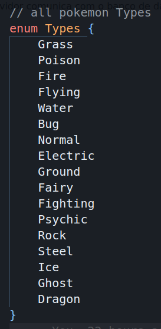
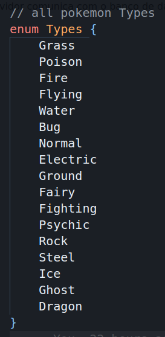

1. Introdução
Este relatório tem como objetivo apresentar o trabalho prático
realizado para a disciplina Gerenciamento de Redes de Computadores,
ministrada pelo professor Elias P. Duarte Jr. no semestre 2022/2.
O trabalho consiste em impementar uma aplicação cliente/servidor
baseada em KVS utilizando mecanismos de comunicação segura de forma a
garantir sigilo, autenticidade e integridade. Além disso, também era
necessário manter uma pequena base de dados e permitir operações de
inserção, update, deleção e criação em cima dela.
2. Implementação
De início, gostaríamos de ressaltar que utilizamos um banco de dados
relacional (PSQL) ao invés de um sistema KVS como Mongo ou Redis.
A escolha foi tomada devido a familiariade da dupla com esse tipo de
banco de dados e devido ao curto tempo para a entrega do trabalho.
Para a aplicação cliente/servidor, com o intuito de manter os
requisitos exigidos, utilizamos os protocolos SSL/TLS para realizar
comunicação segura com os sockets. O cliente e o servidor em si foram
implementados em python e a conexão com o banco de dados PSQL foi
feita através do Prisma (um ORM - object relational mapper - que
aceita PSQL e facilita o desenvolvimento). No geral, temos a seguinte
estrutura:

Apenas o servidor comunica com o banco de dados, ao passo que o
cliente apenas se comunica com o servidor. A base de dados utilizada é
simples e baseada em pokemon, com as seguintes tabelas:
 

O servidor expõe uma API TCP que permite ao cliente realizar as operações de CRUD em cima da tabela de Treinadores. O crud das outras tabelas ainda não foi implementado de maneira a garantir simplicidade e foco no trabalho. Os comandos disponíveis são:
getAllTrainers: retorna todos os treinadores
getTrainer id: retorna um treinador específico, dado seu id
createTrainer: cria um treinador, dado seu nome, idade e hometown
updateTrainer id: da update nos dados de um treinador, dado seu id
deleteTrainer id: deleta um treinador, dado seu id
exit: encerra a conexão com o servidor e finaliza o cliente
help: mostra os comandos disponíveis e uma breve descrição de cada um
Ao rodar o cliente, o usuário é apresentado a um prompt no qual pode executar os comandos acima e receber os resultados desejados:
Aqui vale destacar que o cliente e o servidor trocam mensagens do tipo Message, uma classe definida pela equipe que facilita a comunicação entre os dois lados. Utilizamos pickle de maneira a fazer dump e load de classes Python e poder enviar diretamente pelo socket:
O campo data da mensagem pode conter qualquer coisa necessária para a comunicação, mas comumente, no nosso caso, representa alguma string que depois de parseada dá a operação e os argumentos da operação desejada pelo cliente.
2.1 Cliente
O cliente utiliza duas classes como abstrações: clientClass, responsável por lidar com a conexão ao servidor propriamente dita e os tratamentos do TLS, e interface que por sua vez é responsável por apresentar as opções disponíveis ao usuário e fazer as chamadas a clientClass baseadas na entrada do usuário. Para todos os efeitos práticos, a Interface funciona como um frontend enquanto a clientClass funciona como uma abstração para a API TCP.
Fora isso, o cliente apenas abstrai o fluxo geral de um cliente tcp:
O cliente conecta no servidor, imprime o prompt, lê a operação da entrada que por sua vez pode disparar comandos ao servidor, e então espera a resposta do servidor. Repete isso num loop até que o usuário digite exit.
2.1.1 Classe Cliente
A classe cliente é responsável por lidar com a conexão ao servidor. É aqui que o TLS é configurado e a conexão é estabelecida. Para isso, nela são definidas algumas variáveis de controle:
As variáveis clientCert e clientKey referem-se, respectivamente, ao certificado
e a chave privada do cliente. O certificado é utilizado para autenticar
o cliente junto ao servidor, enquanto a chave privada é utilizada para
assinar as mensagens enviadas ao servidor.
Já serverCert, serverCommonName, serverHost, serverPort são referentes
ao certificado do servidor, ao seu nome comum (registrado no certificado),
ao seu host e a sua porta.
LogsPath é o caminho para o arquivo de log do cliente, enquanto
MAX_TCP_SIZE é o tamanho máximo de uma mensagem TCP - 1024.
Context refere-se ao contexto TLS, client é o socket do cliente, logger
é a insntância do logger e manHost/manPort são o host e a porta do
man in the midle utilizado para demonstrar integridade.
No mais, nessa classe temos as funções de inicialização do cliente, responsáveis por montar o contexto TLS e gera o socket do cliente, além das funções que abstraem o envio e recebimento de mensagens. Dessas, daremos destaque às responsáveis pelo TLS:
A função createContextClient é responsável por gerar o contexto TLS do cliente. Nela, geramos um contexto ssl padrão com propósito SERVER_AUTH e apontamos o certificado do servidor. Depois, carregamos o certificado e a chave privada do cliente e geramos o socket, ainda sem wrap, do cliente.
Já na função sslConnect, utilizamos o context para dar wrap no socket para que as mensagens possam ser assinadas e encriptadas. Depois, abrimos a conexão com o servidor que nesse ponto já é segura.
Daqui pra frente a conexão ocorre de maneira normal como em qualquer outro cliente TCP. A mágica do TLS acontece por baixo dos panos depois de setado o contexto e dado wrap no socket!
2.1.2 Interface
A interface é responsável por apresentar as opções ao usuário, filtrar as respostas e decidir quais ações tomar. É aqui que são feitas chamadas a clientClass para enviar mensagens ao servidor baseado no prompt do usuário:
De maneira abstraída, a interface é muito bem representada pela função acima. Dado um input, encontramos qual operação o usuário deseja realizar e redirecionamos o fluxo para a função responsável por tratar os argumentos e realizar a chamada a clientClass para transmitir a operação escolhida ao servidor.
2.2 Servidor
No geral, o servidor é responsável por receber as mensagens do cliente e realizar as operações desejadas no banco de dados, como criar um treinador novo ou retornar os treinadores existentes. Para isso, ele utiliza a classe serverClass que abstrai o fluxo de um servidor TCP e lida com o banco de dados a partir de uma classe Db.
Abstraído, o servidor é representado pelo seguinte:
Realizamos um bind ssl na porta e ip desejados e então ficamos ouvindo por conexões.
2.2.1 Classe Server
A classe server é responsável por abstrair o fluxo de um servidor TCP. É nela que o input do cliente é recebido e tratado de forma a produzir a resposta desejada dada a operação escolhida. Nela, temos uma porção de variáveis de controle:
As variáveis são análogas às do cliente, então não nos estenderemos muito. Além das variáveis, assim como na classe cliente, temos as funções de inicialização do servidor, responsáveis por montar o contexto TLS e gerar o socket do servidor, além das funções que abstraem o envio e recebimento de mensagens. Dessas, daremos destaque às responsáveis pelo TLS:
Na função createContext, geramos um contexto ssl padrão com propósito CLIENT_AUTH, definimos que certificados ssl são obrigatórios para comunicação com o servidor, carregamos o certificado e a chave privada do servidor, verificamos quais certificados são aceitos e criamos o socket do tcp.
Já na função sslBind, fazemos o bind do host e da porta desejados, colocamos o servidor em modo de escuta e fazemos o wrap do socket identificando que estamos no server_side.
Daqui pra frente a comunicação ocorre de maneira normal como em qualquer outro servidor TCP. A mágica do TLS acontece por baixo dos panos assim como no cliente!
2.2.2 Banco de dados
O banco de dados que utilizamos é um bando de dados relacional, mais especificamente PostgreSQL. Para abstrair o acesso ao banco de dados, utilizamos o Prisma, um ORM que facilita o desenvolvimento e a comunicação com o banco de dados. Para tornar a vida mais cômoda, rodamos uma insntância do banco em um container Docker.
A classe Db é responsável por abstrair o acesso ao banco e permitir a realização das queries e mutations necessárias:
Aqui, criamos a instância do prisma e a instância da classe Trainer, responsável pelo crud dos treinadores:
Aqui, a função findAll retorna todos os treinadores do banco; findOne retorna o treinador cujo ID é dado como parâmetro, caso exista; create cria um treinador com os dados passados; update realiza update do treinador com ID passado, caso exista e delete apaga um treinador com id passado da base de dados, caso exista.
3. TLS
O TLS é um protocolo de segurança que permite a comunicação segura entre
dois pontos. Ele garante sigilo, autenticidade e integridade. Para isso,
ele utiliza criptografia assimétrica e simétrica, além de assinaturas
digitais.
A criptografia assimétrica é utilizada para trocar a chave de sessão
que será utilizada para criptografar as mensagens. A criptografia
simétrica é utilizada para criptografar as mensagens em si. E as
assinaturas digitais são utilizadas para garantir a autenticidade e
integridade das mensagens.
A nossa implementação de uma conexão segura leva em consideração um par certificado/chave privada em cada um dos comunicantes. O cliente conhece o certificado do servidor e o servidor conhece o certificado do cliente de maneira que ambos comunicam apenas entre eles e ninguém mais pode se passar por eles. O servidor aceita uma conexão por vez e o cliente pode se conectar a qualquer momento.
Aqui, explicaremos como chegar em uma implementação mínima do que fizemos com o intuito de ajudar o leitor a entender melhor como funciona e a criar o seu próprio sistema de comunicação segura.
3.1 Gerando as chaves e os certificados
server:
openssl req -new -newkey rsa:2048 -days 365 -nodes -x509 -keyout server.key -out server.crt
Nas perguntas registre o common name como astora (ou algum a sua escolha, mas não esqueça dele!).
client:
openssl req -new -newkey rsa:2048 -days 365 -nodes -x509 -keyout client.key -out client.crt
Aqui as perguntas são as mesmas, mas o common name não importa.
3.2 Gerando o Servidor
import socket, ssl
HOST='127.0.0.1'
PORT=8000
SERVER_CERT='server.crt'
SERVER_KEY='server.key'
CLIENT_CERT='client.crt'
COMMON_NAME='astora'
if __name__ == '__main__':
sock = socket.create_server((HOST, PORT))
context = ssl.create_default_context(
ssl.Purpose.CLIENT_AUTH
)
context.verify_mode = ssl.CERT_REQUIRED
context.load_cert_chain(
certfile=SERVER_CERT,
keyfile=SERVER_KEY
)
context.load_verify_locations(
cafile=CLIENT_CERT
)
sock = context.wrap_socket(
sock, server_side=True
)
conn, adrr = sock.accept()
print(conn.recv())
Setamos algumas constantes de controle como host, porta e os caminhos para os certificados necessários e então
definimos a main.
Nela, começamos criando um socket para server no host e na porta informados e então configuramos o TLS propriamente
dito: começamos criando um certificado com propósito CLIENT_AUTH, setamos a obrigatoriedade de certificados
para conexão, carregamos o certificado e chave privada do servidor e por fim checamos os certificados aceitos. Com
o contexto criado, damos wrap no socket e estamos prontos para receber e transmitir conexões seguras!
3.3 Gerando o Cliente
import socket, ssl
from server import SERVER_CERT, HOST, PORT, COMMON_NAME
CLIENT_CERT='client.crt'
CLIENT_KEY='client.key'
if __name__ == '__main__':
sock = socket.create_connection((HOST, PORT))
context = ssl.create_default_context(
ssl.Purpose.SERVER_AUTH,
cafile=SERVER_CERT
)
context.load_cert_chain(
certfile=CLIENT_CERT,
keyfile=CLIENT_KEY
)
sock = context.wrap_socket(
sock,
server_side=False,
server_hostname=COMMON_NAME
)
sock.sendall('Hello, world over TLS!'.encode())
Importamos as informações importantes do servidor como host, common name, porta e o caminho para o certificado do servidor e definimos algumas constantes do cliente como caminho do certificado e da chave privada do cliente. Na main, criamos um socket de cliente e seguimos para a criação do contexto TLS: criamos um contexto padrao com propósito SERVER_AUTH e certificado do servidor e então carregamos o certificado e a chave privada do cliente. Com o contexto criado, damos wrap no cliente e pronto! Já podemos transmitir mensagens seguras e conectar no nosso servidor! (: